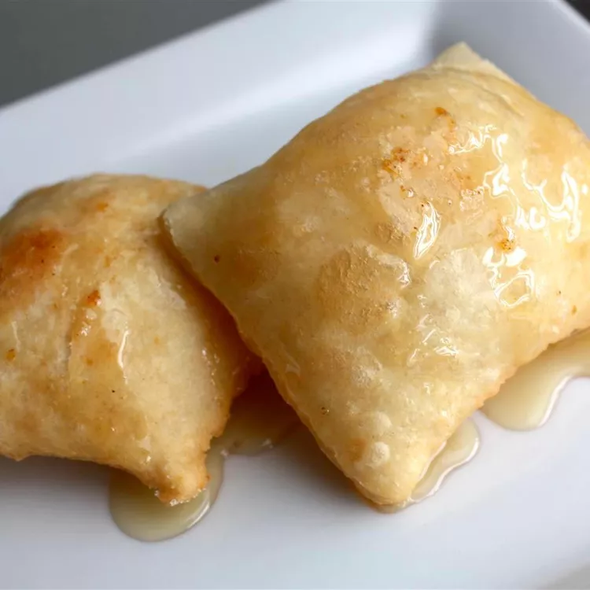

Best Sopapillas Recipe

Description
Sopapillas for any occasion. Serve hot with honey, or your own tostados recipe.
Prep Time:30 minutes
Cook Time:15 minutes
Total Time:45 minutes
Servings:24 sopapillas
Ingredients
- 4 cups all-purpose flour
- 4 tablespoons shortening
- 2 teaspoons baking powder
- 1 teaspoon salt
- 1 ½ cups warm water
- 2 quarts oil for frying
Directions
- Stir together flour, shortening, baking powder, and salt in a large bowl. Stir in water; mix until dough is smooth. Cover and let stand for 20 minutes.
- Heat oil in a deep fryer to 375 degrees F (190 degrees C).
- Roll dough out on a floured board until 1/8- to 1/4-inch thick. Cut into 3-inch squares.
- Fry dough squares in the preheated oil until golden brown on both sides. Drain on paper towels and serve hot.